Hume Genesis “在 3045 年，创意表达稀缺。我们了解到，相互影响让每个人都有发言权。它在最黑暗的时代拯救了我们。” - angelbaby（休谟元星） Hume Genesis 是您进入 Hume
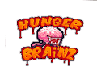 Hunger Brainz NFT Hunger Brainz 是一款 100% 链上僵尸大战幸存者的战争游戏，具有高风险甚至更高的回报Hunger Brainz 是一个机会和风险的游戏。你可能会失去你的 NFT，或者你可能会
Hungry Sausage Club 我们在 Instagram 上建立 香肠社区的第一眼，以及 通过迷你游戏和不同的赠品活动与人类进行不和谐的香肠互动为了发现他们存在的真相，香肠们决定在世界各地聚集香
HungryBunz 8,888 名 HungryBunz 在世世代代被流放到荒凉的小岛上后，降落在了传说中的西沃拉利亚土地上。从瘦身开始，在 SEED 行动中扮演自己的角色，搜索、进食、进化和摧毁。将您
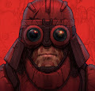 HUXLEY Comics [HUXLEY Universe 的基石是Ben Mauro在过去 9 年中开发的六期图画小说系列。 故事讲述了两个浪人战士的旅行，他们偶然发现了一个极其罕见的古老机器人，名为 HUXLEY
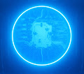 HUXLEY Genesis ▶ 什么是 HUXLEY Genesis？ HUXLEY Genesis 是一个 NFT（非同质代币）集合。存储在区块链上的数字艺术品集合。 ▶ 有多少 HUXLEY Genesis 代币？ 总共有 10 个 HUXLEY Genesis NFT。目前，
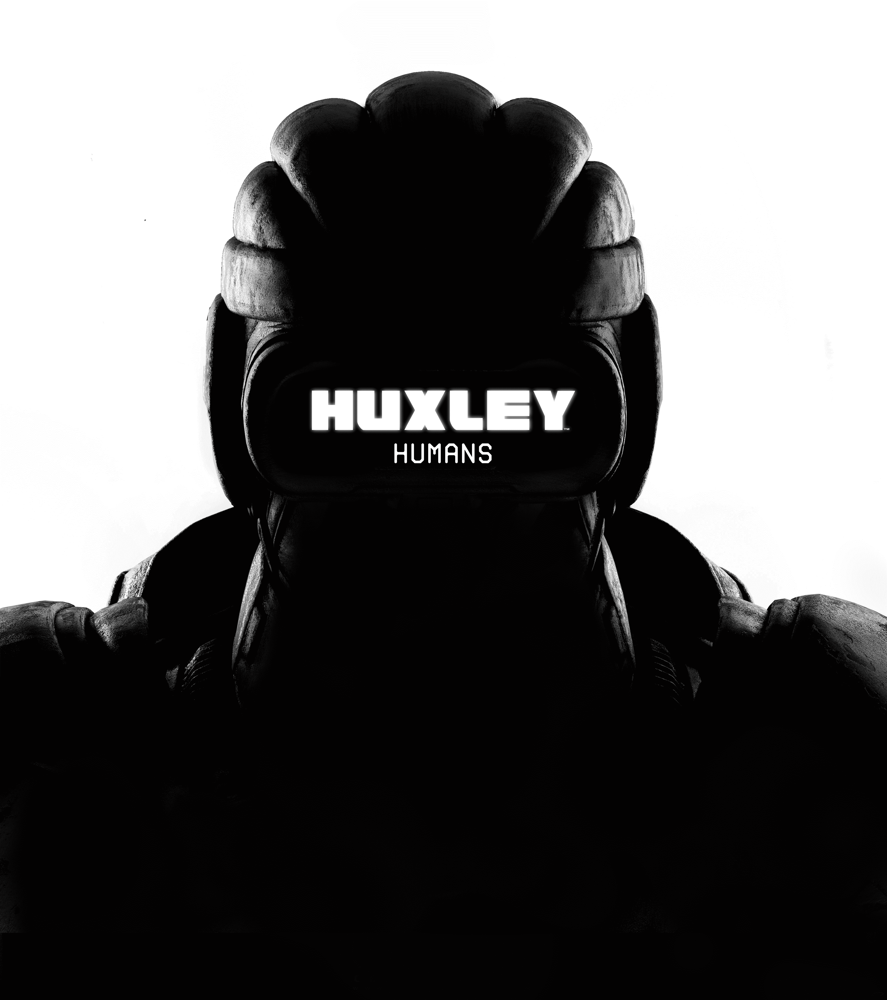 HUXLEY Humans HUXLEY Humans 是来自 Fury-7 的 3000 名公民的生成集合，位于 HUXLEY 宇宙的 Sector-217。10 个人类殖民地通过该系列代表不同的视觉风格。 赫胥黎是由著名的科幻概念艺
I N V A D E R S 2021 年 9 月 10 日，五角大楼发布了 Gray Disclosures 51 论文。它证实了我们中间存在外星人，他们小心翼翼地伪装成平民。他们的目标：全面入侵和殖民地球（这就是我们的星
I'm Tired NFT ▶ 什么是我累了 NFT？ 我累了 NFT 是一个 NFT（不可替代代币）集合。存储在区块链上的数字艺术品集合。 ▶ I’m Tired NFT 代币有多少？ 总共有 5,555 个 I’m Tired NFT NFT。
Impostors Genesis Aliens 冒名顶替者创世纪外星人代表冒名顶替者生态系统的基础 NFT 集合，并作为冒名顶替者创世纪季的通行证，该季将举办七场独特的活动。这些星际生物中只有 10,420 个
In ETH We Trust! Eth 延迟到达 b4，eth 合并以支持我们心爱的 Eth。 不要指望我会做出真正的举动，在发布会上发现我的开发人员在酒吧 b4 喝醉了。 Gmi wagmi ngmi 已经厌倦了这个
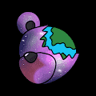 inBetweeners by GianPiero inBetweeners 是一个全球众包社区，专注于在元宇宙中传播爱和积极性。访问社区仅限于 10,777 名熊持有人，每个人都有自己的特殊方式。 这幅画由世界知名艺术家 GianPiero 手绘，他
Incognito Incognito (ICON) 项目由 NFT 收藏家、艺术家和专业人士创建，旨在为 NFT 社区带来独特而特别的东西。该集合由 10,000 个随机生成的独特角色组成，这些角色作为 ERC-721 令牌生活在以太
INCOOOM 什么是INCOOM？ Incooom Finance 是一种革命性的工具，可以促进去中心化金融和 NFT 文化的融合。 INOOOM 是什么时候创建的？ INOOOM 于 2021 年 9 月 14 日首次发行。 有多少 INOOOM 代币？
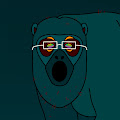 INCOOOM VIPP ▶ 什么是 INCOOOM VIPP？ INCOOOM VIPP 是一个 NFT（Non-fungible token）集合。存储在区块链上的数字艺术品集合。 ▶ 有多少个 INCOOOM VIPP 代币？ 总共有 1,601
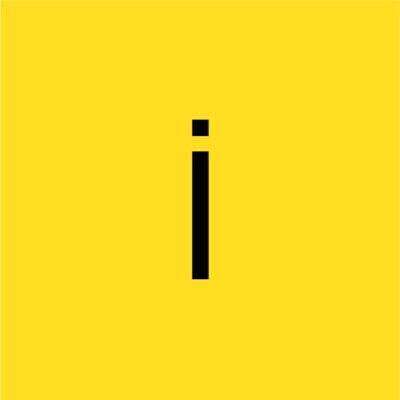 Infectables 什么是传染病？ 雇员被一种神秘的病毒感染。但是每个人都应该工作… Infectables 是什么时候创建的？ Infectables 于 2022 年 7 月 17 日首次发行。 有多少 Infectables 代币？ 我们
Infected Ape Planet by PAP Infected Ape Planet是Prime Ape Planet的第三个集合，只能由您的Prime Ape有点过于好奇并接触到神秘的毒香蕉来创建。 使用三种不同级别的
Infested Tigers 自然与无尽的人类贪婪对抗。 Infested 世界的第一个项目是“Infested Tigers”，由 Infested Mountain 的顶级掠食者组成。它由大约 50 种由韩国纸材料制成的颜色资
Infinethum Infinethum 是一个生成艺术项目，用于在高度受限的环境下进行实验性小批量工作，由 ArtBlocks 提供支持。 Coalescent探索从简单的形状和规则中出现的复杂模式。
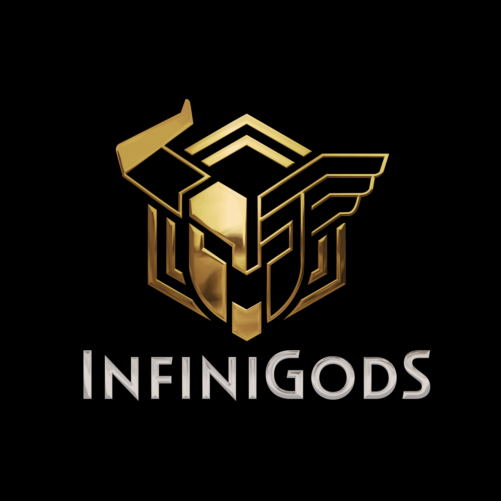 InfiniGods - InfiniPass 什么是 InfiniGods - InfiniPass？ InfiniPass 让玩家可以抢先体验 InfiniGods 系列中的所有游戏，并优先获得 InfiniGods 宇宙中的 NFT 销售。这些终生通行证赋予您穿越 InfiniGods 宇宙的力量。作
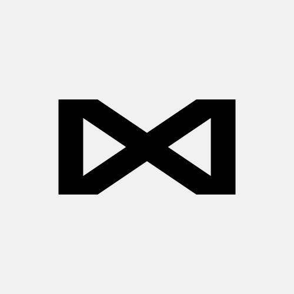 Infinite.NFT 我们的 NFT 艺术品由人工智能艺术生成的 5000 个渐变球体组成，与金钱或名誉无关，这就是 FREEMINT+ 0 版税机制的用武之地。我们不依赖 Twitter、discord
Infinites AI Infinites AI 是在铸造过程中生成的 512 件独特艺术品的集合。每个无限都是利用两个生成过程的交集创建的：一个 StyleGAN 训练有来自大师的艺术作品的策展，以及一个链上生
Infinity Frogs NFT Infinity Frogs 是第一个连接 ETH 和 ICP 的 NFT。 我们想桥接两个区块链：以太坊和互联网计算机。Infinity Frogs 是第一个实现飞跃的公司。让我们一起进入每个 NFT 都
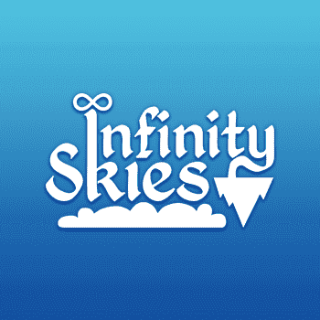 Infinity Skies Infinity Skies 建筑系统的灵感来自《模拟人生》，您可以在其中使用墙壁、地板和装饰物在天空中的岛屿上建造一座城堡，让这个地方感觉像家一样。主要区别在于，在
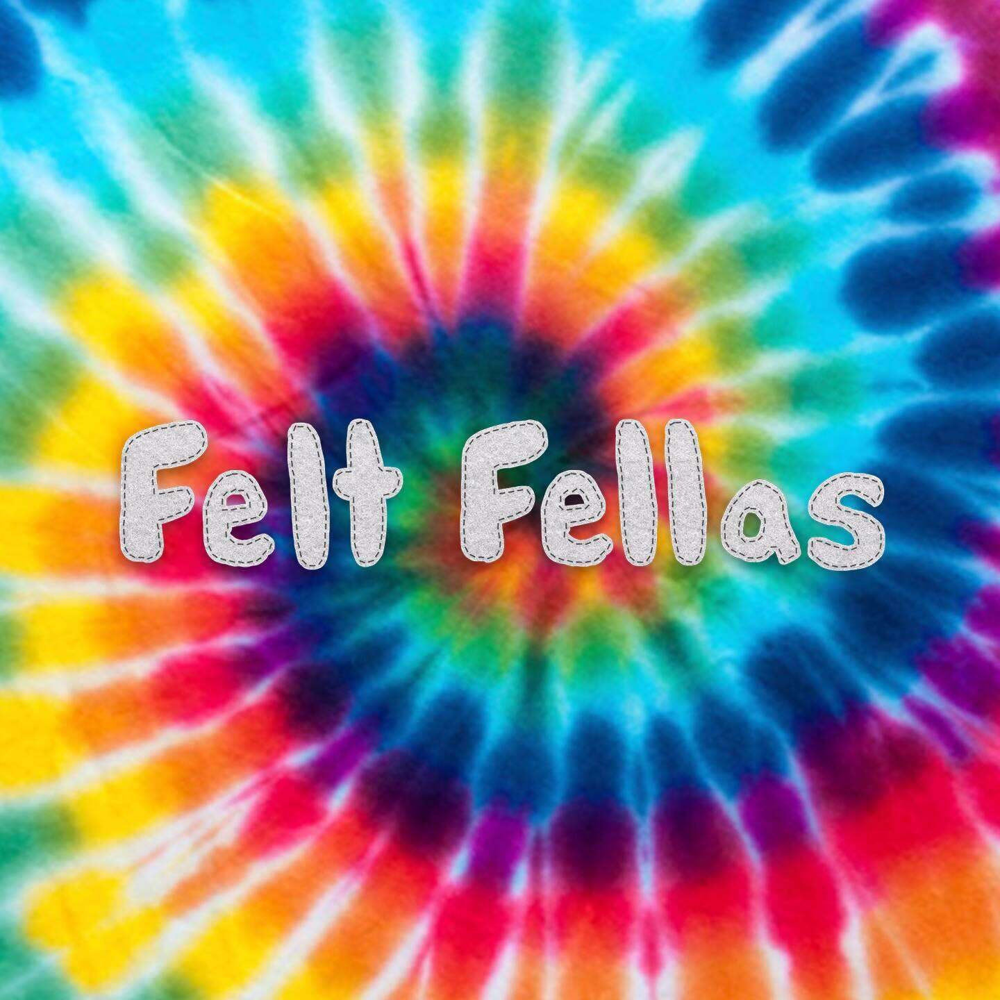 Interactive Fellas Felt Fellas 是由手绘特征和背景生成的 10,000 个 NFT 的集合。拥有 14 种独特的 1/1 和超过 125 种原始特征，我们密切关注每一个针脚和细节，以确保 Felt Fellas 与我们面前的任何系列真
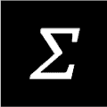 Intermezzo Tools ▶ 什么是间奏工具？ Intermezzo Tools 是一个 NFT（非同质代币）集合。存储在区块链上的数字艺术品集合。 ▶ 有多少间奏曲工具代币？ 总共有 1 个 Intermezzo Tools NFT。目前 500 位
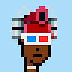 International Punks. ▶ 什么是国际朋克。？ 国际朋克。是一个 NFT（不可替代代币）集合。存储在区块链上的数字艺术品集合。 ▶ 多少国际朋克。代币存在吗？ 总共有 4,722 个国际朋
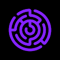 Internet Game Token 1 薄荷门票玩 8 月 30 日薄荷糖。您的票会跟踪您的排名和分数。您可以选择在大结局前将其出售以“兑现”，或者继续争取大奖。买家继承你的分数+排名。是
Into The Metaverse XCOPY Bored Ape Yacht Club 是以太坊区块链上 10,000 个 Bored Ape NFT 的集合，这些 NFT 已在流行文化中根深蒂固。每个 Bored Ape NFT 都兼作独家俱乐部的会员资格，使所有者能够获得从商品掉落到活
Invalid Helmets 什么是无效头盔？ 1138 件独特的收藏头盔，很久以前就在元宇宙中丢失了。你要恢复哪一个？ 无效头盔是什么时候创建的？ 无效头盔于 2021 年 10 月 24 日首次铸造。 有
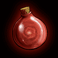 InventoryNFT ..欢迎来到 Inventory… INVENTORY 是一个独特的新 NFT 项目我们的愿景是基于你最喜欢的 RPG 的收藏库存 7000 个随机生成的集合，每个集合包含 8 个插槽 超过 150 个独特的收藏品 您库存
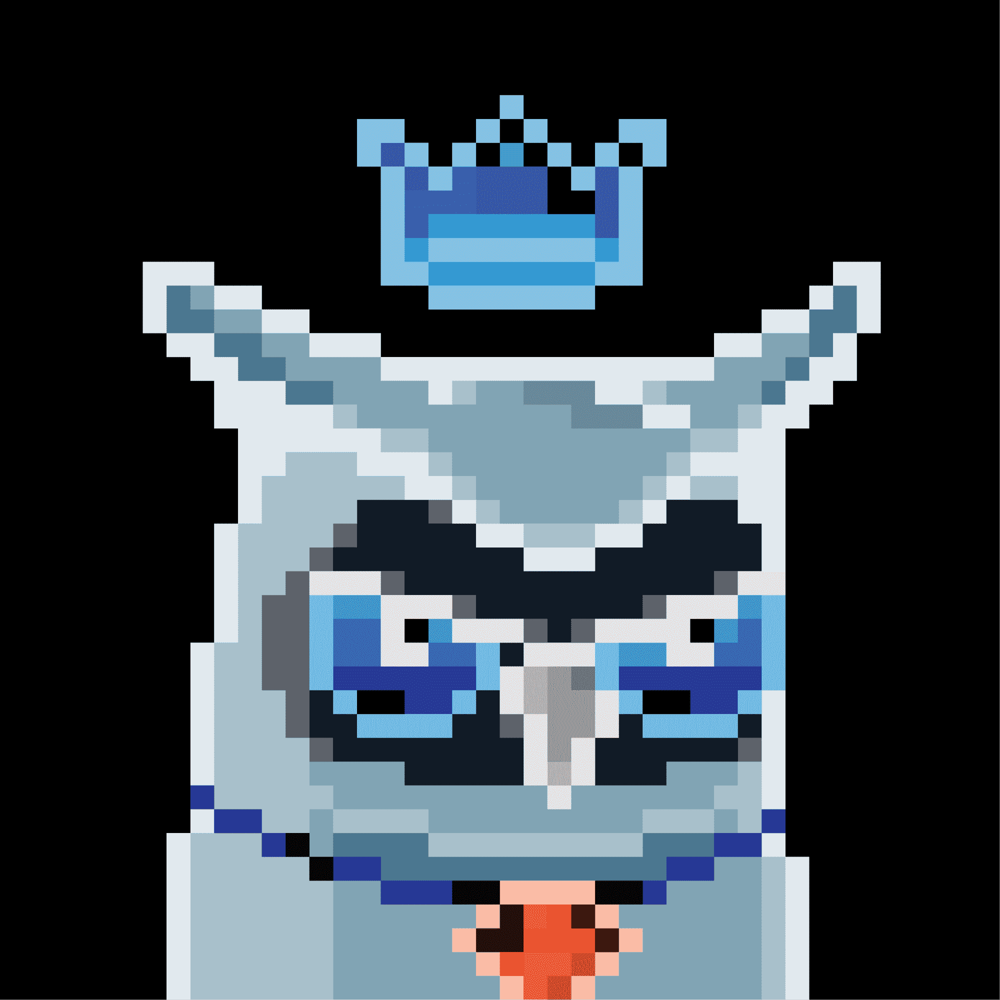 InverseMoonbirds InverseMoonbirds 是什么时候创建的？ InverseMoonbirds 于 2022 年 8 月 8 日首次铸造。 有多少个 InverseMoonbirds 代币？ 我们目前正在追踪流通中的 2,886 个尚未被销毁或质押的 InverseMoonbirds 代币。 InverseMoonbirds 有多少特征？ 我们为 InverseMoonbirds 编
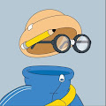 Invisible Friends 什么，谁，在哪里？KITH 隐形朋友，真的吗？那是什么？五月你就知道了。持有人的优先访问权。 在我们一起探索 NFT NYC 时，与 Invisi-Fam 一起出去玩。会有好的艺术
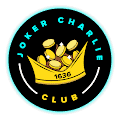 Joker Charlie Club Genesis 成为伦敦市孵化器社区的成员，并从持有 JCC Genius NFT 中受益。JCC Genesis NFT 是代表 Joker Charlie Club 会员的 555 个 NFT 的集合。小丑查理俱乐部支持和庆祝那些敢于做不同事情的人，
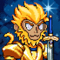 Journey to the Metaverse - Genesis 这是一个社区驱动的项目，旨在扩大孙悟空的优势。现在加入，体验西游记孙悟空的第一个角色。第 2 代将在稍后放弃，最大供应量为 4444。 元界之旅，是
JOYWORLD JOYtoys ▶ 什么是JOYWORLD JOYtoys？ JOYWORLD JOYtoys 是一个 NFT (Non-fungible token) 集合。存储在区块链上的数字艺术品集合。 ▶ JOYWORLD JOYtoys 代币有多少？ 总共有 3,402 个 JOYWORLD JOYtoys NFT。目前，
JPEG Cards ▶ 什么是 JPEG 卡？ JPEG Cards 是一个 NFT（不可替代令牌）集合。存储在区块链上的数字艺术品集合。 ▶ JPEG Cards 代币有多少？ 总共有 1,018 个 JPEG Cards NFT。目前，426 位所
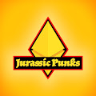 JPunks: OG-Rex 留下来茁壮成长，恐龙演变成侏罗纪朋克，这是一个 3D 不合适的角色群体，现在是元宇宙中的主要物种，其中 7777 OG-REX 处于领先地位。 Jurassic Punks 是来自专业 VFX 工作室 Meta-Labs 的
JRNY CLUB OFFICIAL 我们目前有 2 个额外的 NFT 套装正在制作中，JRNY NFT CLUB 持有者每持有一个 NFT 将获得 1 个免费铸币厂。即将到来的第一集将拥有令人惊叹的艺术，成为史诗故事
Juicebox Frens ▶ 什么是 Juicebox Frens？ Juicebox Frens 是一个 NFT（非同质化代币）集合。存储在区块链上的数字艺术品集合。 ▶ 有多少 Juicebox Frens 代币？ 总共有 6,969 个 Juicebox Frens NFT。目前，2
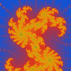 Julia Set Collection 这些艺术品是用数值算法生成的，并刻在 4200 个独特的 NFT 中。每件作品都代表了我们最喜欢的 Julia 点之一的邻域，对应于 Mandelbrot 集合集合中心的点 C。Julia 的缩放
Jungle Destroyers Official Jungle Destroyers 是一个独特的 NFT 集合，由 8,888 名人类组成，他们来到 Angry Apes United Jungle 突袭由超过 135 种手绘特征生成的丛林。 我们正在创建一个无与伦比的社区，持有者不仅有机会亲